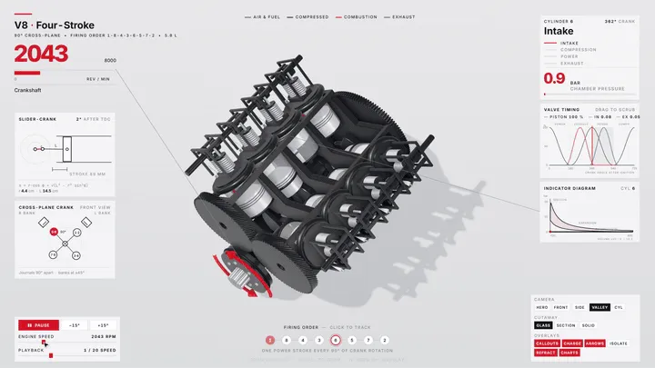
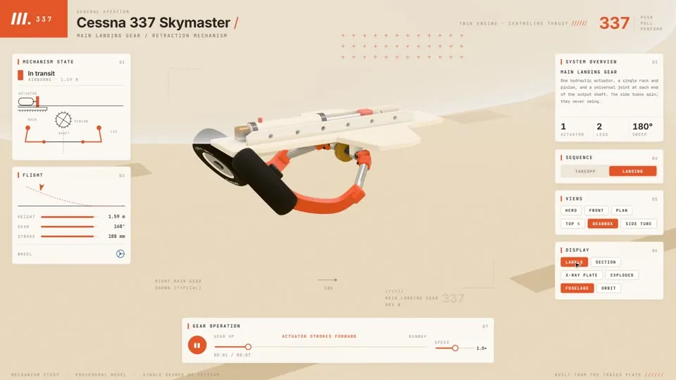
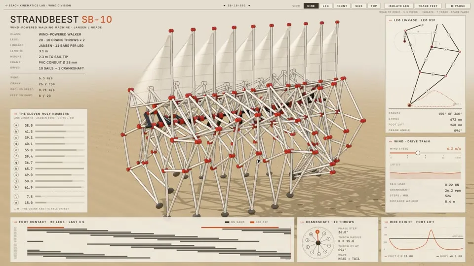

docs/v8.gif 的一帧，MIT）。左上转速、右侧气门正时与示功图都由同一个曲柄角模型实时算出。它是什么
- 形态：一个 Claude Code Skill（
SKILL.md+ 运行时 kit + 3 台完整示例机器 + 音效引擎）。产出是一个 HTML 文件，three.js 与字体全部内联，离线可开，约 800 KB。 - 一台模拟器的六个部分（Elvar 的归纳）：机器（用代码造出的几何体）、模型（一个纯函数，所有姿态与读数都从它来）、面板（实时图表与数字）、按钮（每个子系统一个：单独显示、剖开、隐藏）、窗口（把正在干活的部位剖开或透明化）、巡游（无人操作时光标自动点按钮演示，任何点击/拖动/滚轮/按键交还控制，安静 25 秒后再接管）。
- 自带三台机器：交叉平面 V8（玻璃缸套里能看到混合气燃烧，示功图随曲柄角画圈）、塞斯纳 337 主起落架（一个液压作动筒推齿条 201 mm，带动 32 齿小齿轮转整半圈，起落架腿收进机身）、Theo Jansen 的 Strandbeest 仙风机器兽（20 条腿、一根曲轴、风驱动，靠 Jansen 1990 年的 11 个连杆长度和“圆与圆求交点”解出每个关节）。
- 不止网页：同一台机器有
-film（录制用巡游脚本，render(t)是时间的纯函数）和-live（可操作页面）两种外壳；capture.mjs用无头 Chromium 逐帧截取送进 ffmpeg，sfx/用纯 Python 在同一条时间线上合成音效并自动母带到 −14 LUFS。 - 出处：运行时、逐帧截取、音效引擎和自查规则来自 whaleyxbt 的开源仓库 claude-motion（MIT；注意这是 GitHub 上的同名开源工具包，不是 Anthropic 官方的 Claude Motion 产品）；12 段录音素材为 Freesound 的 CC0 音效，经 Barty-Bart/motion-graphics 整理。
- 和 Anatomy 的关系：Elvar 10-18 那篇《把任何问题变成一台能运行的机器》用的是 Ryan 的 Anatomy Skill，本站已收在 anatomy-skill 页。teardown 是他自己的新 Skill：从“按步骤演示的 2D 机器图”走到“可以绕着转、剖开、拆件的 3D 模拟器”，方法论（纯函数模型、读图自查、seek 逐帧录制、代码配乐）一脉相承。
- 发布方与热度：仓库 elvarofficial/teardown 于 2026-10-30 17:29（UTC+8）创建，单次提交；截至 2026-10-31 15:45（UTC+8）90 星、12 个 fork（GitHub 官方 API）。发布长文同日 22:25（UTC+8）上线，抓取时约 26.5 万浏览、895 收藏、377 赞。

docs/cessna.jpg，MIT）。左侧读数“起落架 168°、行程 188 mm”与 201 mm 对应 180° 的比例一致。安装与上手
需要：能用 Claude Code 的订阅（Elvar 全程用的是 Opus 5.5）；Node.js 20 或更新；只有录视频和配乐时才需要 ffmpeg 与 Python 3（标准库即可）。
npx skills add elvarofficial/teardown -g -a claude-code
# 然后在安装目录里执行一次（Elvar 文中写的路径）：
cd ~/.claude/skills/teardown && npm install && npx playwright install chromium之后在 Claude Code 里输入 /teardown，或者直接用大白话提问（README 的例子）：“给我做一个能拆开的四冲程摩托车发动机模拟器”“机械表是怎么走时的？做成模拟器给我看”“拆解一台液压挖掘机的动臂，并录一段 20 秒视频”。想先看成品，可以构建自带示例：
node sims/build.mjs v8-live # → teardown-out/dist/v8-live.html
node sims/build.mjs cessna-live
node sims/build.mjs strandbeest-live不想装也能先玩：Elvar 的个人站 visual-learning.app 的 “Simulators” 栏目放了 7 台在线版（机器水母、六足机器人、沙虫 MK-X、Strandbeest、V8、塞斯纳 337 起落架、机器蜜蜂），手机或集成显卡首次加载要等几秒编译着色器。
⚠️ npx playwright install chromium 会下载一个完整的 Chromium（一百多 MB），磁盘紧张时留意。
一台机器怎么搭：文件分工与七条规则
SKILL.md 把一台机器拆成固定的几个文件，三台示例严格照此组织：
| 文件 | 职责 |
|---|---|
kin.js / gear.js / jansen.js | 数学。真实单位的真实尺寸，一个输入（曲柄角、行程、风速），所有姿态与读数都是它的函数。这里不碰 three.js。 |
engine.js / gear.js / beast.js | 几何体，用代码造：车削件、管材、实例化连杆。update(input) 摆姿态。 |
stage.js | 影棚、灯光、阴影、后期（GTAO、bloom）。frame(state, cam) 画一帧。 |
console.js | 叠加层：固定 1600×900 的 CSS 版面，面板、图表、开关、带引线的标注。 |
film.js | 操作脚本（换视角、单独显示、剖切、油门），render(t) 是时间的纯函数。 |
live.js | 同一台机器的实时版：按钮、滑块、环绕、缩放、按键；无输入时把 film 的脚本当自动巡游播放。 |
score.py | 沿 film 时间线生成声音。 |
七条“决定成败的规则”浓缩一下：① 从参照物出发，绝不凭想象；② 真实数字、单一来源，并手算核对一个；③ 一个输入驱动一切，不手动打关键帧；④ 干活的部位要能打开；⑤ 浅色影棚、一个强调色；⑥ 按机构选机位（平面连杆正面看会糊成栅格，改 3/4 视角）；⑦ 穿模用参数块里的数字修，绝不靠机位遮掩。另有“实时页面三条”：在集成显卡上测、预热着色器、页面不超过 1 MB。
核实与注记
- ✅ 许可：MIT（LICENSE 原文；版权人 elvarofficial 与 whaleyxbt；GitHub API 亦识别为 MIT）。本页转载的 README/SKILL.md 中译与三张示例图均在 MIT 范围内。长文是作者本人的 X 文章，按本站惯例全文中译并附英文原文。
- ✅ 代码与文中数字一致：
cessna-shared/gear.js里写着pinionR: 0.064 // 32 teeth, 4 mm module、stroke: 0.201；32 × 4 mm = 128 mm 节圆直径，π × 128 / 2 ≈ 201.06 mm，确是半圈。jansen.js共 67 行，内含的 13 个长度（a=38 … k=61.9，另 l=7.8、m=15）与公开流传的 Jansen “神圣数字”一致。V8 点火顺序 1-8-4-3-6-5-7-2 也写在kin.js。 - ⚠️ “真实数字”只核了自洽：201 mm / 32 齿 / 4 mm 模数在数学上互相吻合，但它们是否就是真实塞斯纳 337 起落架的设计参数，本站未找到手册核对，⚠️ 未核实。Skill 自己也要求“不确定是不是真实数字就说出来、给出处”。
- ⚠️ “3,790,000 浏览的 V8 模拟器”没给链接，本站一次搜索未找到原帖，⚠️ 未核实。“野火工具 1,640,000” 对得上：Dilum Sanjaya 10-08 的帖子（“Made with Opus 5.5”）抓取时约 165.3 万浏览。
- ⚠️ 数量小冲突：文中先说“2 天做了 7 台”，结尾说“6 台都能在浏览器里免费玩”；visual-learning.app 目前列出 7 台模拟器（多了机器蜜蜂），⚠️ 推断是发文后补上的。
- ⚠️ 参数小冲突：长文第 8 步配乐提示词写“真峰值低于 −1 dB”，而 SKILL.md 写自动母带“真峰值 ≤ −2 dBFS”。两边都照录，以仓库实际代码为准（本站未运行音效引擎）。
- ⚠️ 利益相关：长文末尾导流到作者自己的 visual-learning.app（页面署名“Made by @elvar_official”，有 Vercel 统计脚本）。Skill 免费开源，未见付费内容或推广标注。
- ⚠️ 性能与时长为作者自报：“六足机器人集成显卡 15 fps → 75 fps”“V8 影片 26 秒、189 个音效”“兔子页 15.9 MB → 967 KB 后链接卡片出现”等，本站均未复现。
- ⚠️ 未实测：受磁盘空间所限，本站只浅克隆了仓库并读了代码，没有执行
npm install、没有在 Claude Code 里驱动这个 Skill，也没有构建示例页或录视频。 - “Opus 5.5”是作者所写的模型名，照录。

docs/strandbeest.jpg，MIT）。左侧“The eleven holy numbers”即 Jansen 的连杆长度，机位放在沿脊梁的 3/4 角度，避免 20 条腿正面看叠成一道栅栏。相关阅读（本站）：Anatomy：说出一个想法，Claude 把它造成一台会动的机器（含 Elvar 10-18 长文与 Kaero 同主题长文全译）；花叔 huashu-motion 与 dimensional-drawing——同样用 render(t) 纯函数 + 无头浏览器逐帧出片。
Elvar 长文全文中译：《我怎样把任何机器变成一台可以拆开的 3D 模拟器》
原文：Elvar（@elvar_official）X 长文 How I Turn Any Machine Into a 3D Simulator You Can Take Apart，2026-10-30 22:25（UTC+8）。作者本人内容，全文中译；提示词保留英文原文并附中译。〔〕内为本站说明。原文中的 6 段演示视频/动图与封面本站未转载，以〔演示〕标出位置。
一个免费的 Claude Skill，能把任何机器造成一个能运转的 3D 模型，带实时仪表，每个零件一个按钮。下面是安装方法和全部 9 段提示词。
〔演示：V8 模拟器〕
有一个免费的 Claude Skill，能把任何机器造成 3D 模拟器。你可以绕着它转、把它剖开，看正在干活的那个零件。
在 V8 上，你追踪的那个气缸会变成玻璃，你能看到混合气在里面燃烧，同时压力图画出它的循环。
一个类似的 V8 模拟器在 X 上拿到了 3,790,000 次浏览。一个用 Opus 5.5 做的野火工具拿到了 1,640,000。人们看一台机器运转的时间，比读一篇讲它的文章长得多。
它适用于任何有活动部件的东西，甚至是没人造过的机器。一条长 1,300 米、直径 190 米的沙虫：
〔演示：沙虫 MK-X〕
面板读的是沙虫的真实姿态。头部截面随钻头转动，深度剖面跟着埋在沙下的身体走，地图画出它的轨迹。
一只机器水母：
〔演示：机器水母〕
每个子系统都是一个按钮。按下去，那部分就被拆开，身体其余部分让到一边。
我两天做了 7 台。其中 3 台随 Skill 附带：V8、塞斯纳起落架和 Strandbeest。
这个 Skill 叫 teardown（拆解）。它免费，在 Claude Code 里运行。
你要做的是什么
一台模拟器就是一个 HTML 页面，800 KB，离线能用。我做的每一台都有同样的 6 个部分。拿一台步行机器人来说：
〔演示：六足机器人〕
- 机器。用代码造：六边形底盘、6 条腿、18 个关节、红色舵机外壳、开槽大腿、末端是锥形脚尖的小腿。
- 模型。所有腿共用一个求解器。它提前一秒规划每一步。腿、面板、地面都从它读数。
- 面板。关节力矩、每只脚的高度、6 条腿各自的负载、求解耗时、舵机温度。
- 按钮。三角步态、波纹步态、波浪步态，方向键盘，WASD 键，速度、步幅、机身高度的滑块。
- 窗口。地面上显示求解器在干活：连到每只着地脚的线、每只脚即将落点的标记、摆动轨迹。
- 巡游。没人碰时，一个光标自己操作页面。点任何东西，它就把控制权交给你。安静 25 秒，巡游又回来。
你需要什么
- 包含 Claude Code 的任一订阅。我全程用的是 Opus 5.5。
- Node.js 20 或更新。
- ffmpeg 和 Python 3，只在做视频和声音时用。你开口让 Claude Code 装，它会把两样都装上。
- Skill 叫 teardown：MIT 许可，免费，内含 3 台机器。它建立在 whaleyxbt 的 claude-motion 之上，逐帧截取和音效引擎都来自那里。
第 1 步：安装 Skill
npx skills add elvarofficial/teardown -g -a claude-code然后，在安装好的文件夹里执行一次：
cd ~/.claude/skills/teardown && npm install && npx playwright install chromium打开 Claude Code，输入 /teardown。
第 2 步：选机器，找参照
这一步决定一切。我是吃了亏才明白的。
我让它做穿山甲、犰狳和蝎子，什么参照都没给。3 个出来都是千篇一律的玩具。然后我给同一个模型一段真实 V8 模拟器的视频，它就一个面板一个面板地把发动机重建了出来。
所以：选一台只有一个运动输入、有真实数字的机器，再找一张它的图——手册里的剖视图、一张照片、一段视频都行。5 个我还没做的：
- 自行车后拨在 11 片飞轮之间换挡
- 以 4 Hz 跳动的机械表擒纵机构
- 转弯时的汽车差速器
- 缝纫机打出一个锁式线迹
- 挖掘机动臂挖一斗
第 3 步：造机器
把下面这段贴进 Claude Code。方括号里的内容全部换成你的。
/teardown Build [the Cessna 337 main landing gear] as an interactive 3D simulator. Reference attached: [a cutaway drawing of the gear].
Build it from code in real units: [the main plate, the hydraulic actuator, the rack, the pinion on its output shaft, the universal joints, the side tubes, the spring legs and the wheels].
Before you draw anything, write the model as pure functions of one input: [stroke from 0 to 1]. Use the real numbers: [the rack travels 201 mm, the pinion has 32 teeth at module 4 mm, so the legs turn exactly 180°]. Check them by hand and show me the check. If you are not sure a number is real, say so and tell me where it comes from.
Every part, every panel and every label reads from that one model. Nothing is animated by hand.中译： /teardown 把［塞斯纳 337 主起落架］做成一个交互式 3D 模拟器。参照已附上：［一张起落架剖视图］。 用代码、按真实单位造出：［主安装板、液压作动筒、齿条、输出轴上的小齿轮、万向节、侧管、弹簧腿和轮子］。 画任何东西之前，先把模型写成一个输入的纯函数：［行程，从 0 到 1］。用真实数字：［齿条行程 201 mm，小齿轮 32 齿、模数 4 mm，所以腿正好转 180°］。手算核对，并把核对过程给我看。如果你不确定某个数字是真的，就直说，并告诉我它从哪来。 每个零件、每块面板、每个标签都从这一个模型读数。没有任何东西是手动做动画的。
为什么这样靠得住：
- 模型先行。齿轮、仪表和时间线读的是同一个函数，所以它们不可能对不上。
- 一个输入。整套机构由一个数字摆出姿态，那才是一台机构。12 个零件各自手动做动画，就是 12 段动画。
这段提示词做出来的是这个：
〔演示：塞斯纳 337 起落架〕
一个作动筒把齿条推出 201 mm。齿条带着一个 32 齿的齿轮正好转半圈。起落架腿向后摆过 180°，收进机身。
这些数字在纸上是对得上的。32 齿、4 mm 模数，就是一个 128 mm 的齿轮。它周长的一半是 201 mm。
V8 和 Strandbeest 都出自同一段提示词，只是换了方括号里的内容。Strandbeest 的模型是 Theo Jansen 1990 年的 11 个连杆长度：转动曲柄，每个关节都通过圆与圆求交跟着动。
第 4 步：搭控制台
Lay out a console around the machine at 1600×900:
- the title and the main live number top left, big: [engine speed in rpm]
- live charts that move with the machine: [valve lift over 720° of crank, the pressure-volume loop of the tracked cylinder]
- a schematic panel that redraws the mechanism in 2D from the same model
- one button per subsystem: isolate it, cut it, show it alone
- camera views as buttons: [hero, front, side, top, inside the valley]
- callouts with thin leader lines into the parts they name
Every panel redraws from the frame's state. No number on screen is typed in.中译： 在机器周围按 1600×900 排一个控制台： - 标题和最主要的实时数字放左上角，要大：［发动机转速，rpm］ - 跟着机器动的实时图表：［720° 曲柄角内的气门升程、所追踪气缸的压力-容积循环］ - 一块示意图面板，用同一个模型把机构重画成 2D - 每个子系统一个按钮：单独显示、剖开、只显示它 - 机位做成按钮：［主视角、正面、侧面、顶部、V 型夹角内部］ - 用细引线指向所标注零件的标注 每块面板都根据这一帧的状态重画。屏幕上没有一个数字是手打进去的。
一张跟着零件动的图表，是人们留下来的原因。V8 的压力循环每 720° 曲柄角闭合一次。你看着它闭合。
第 5 步：给它定调
Style: a clean study model on a pale studio.
- light background, soft shadows on an invisible floor, one accent colour for the part that is working right now
- the machine fills 60 to 70% of its view
- dark parts glossy, liners glass, metal roughness at least 0.45 so it never streaks white
- if a part is near-white, give it a thin ink outline or a darker ground
- pick the camera for the mechanism: if it collapses into a lattice face-on, use a 3/4 view中译： 风格：浅色影棚里一件干净的研究模型。 - 浅色背景，隐形地面上的柔和阴影，一个强调色只给此刻正在干活的零件 - 机器占画面的 60% 到 70% - 深色零件有光泽，缸套是玻璃，金属粗糙度至少 0.45，免得拉出白色高光条 - 如果某个零件接近白色，给它一圈细墨线描边，或者换一个更深的底 - 按机构选机位：如果正面看会糊成一片栅格，就用 3/4 视角
每一行都是一次修正。Strandbeest 的白色管子在奶油色背景上消失了，直到我把它挪到沙地上、加了墨线描边。正面看，它的 20 条腿变成了一道栅栏，所以机位沿着脊梁放在 3/4 角度。我那个兔子场景的深色版本，在信息流里丢掉了最开始的一秒。
〔演示：浅色与深色版本对比〕
第 6 步：像评论家一样检查
Before you show me anything:
1. Render a still at every beat of the tour and read each one: a part passing through another, a part floating off its mount, a label covering what it names, a number that disagrees with the pose.
2. Scrub every transition at 0.2 s steps and look for a jump.
3. Fix collisions with a number in the parameter block. Never hide them with the camera.
Tell me what you checked and what you fixed. Show me the stills.中译： 给我看任何东西之前： 1. 在巡游的每个节拍渲染一张静帧，逐张读：有没有零件穿过另一个零件、零件脱离安装位置悬空、标签挡住它所标注的东西、数字和姿态对不上。 2. 以 0.2 秒为步长拖过每一个过渡，找跳变。 3. 穿模用参数块里的一个数字修。绝不用机位把它藏起来。 告诉我你查了什么、修了什么。把静帧给我看。
这些静帧抓到了 2 个我本来会发出去的 bug。一只兔子的脸穿出了它帽子的帽壁，直到一个数字——0.222 m——把它放回里面。六足机器人每次切换步态时都有一条腿飞出去，直到它的脚瞄准下一个真实落脚点。
第 7 步：做成一个能开的页面
Make the simulator a page people drive:
- the tour from the film plays by itself, with a cursor that walks to each button and presses it
- any click, drag, scroll or key hands control to the visitor; 25 seconds of quiet hands it back
- drag to orbit, scroll to zoom, a key to hide the panels
- warm every shader before the first frame so the page never freezes
- test it on an integrated GPU and add quality steps: no ambient occlusion, a lower pixel ratio, smaller shadows, panels redrawn every other frame中译： 把模拟器做成一个人们能操作的页面： - 影片里的巡游自动播放，有一个光标走到每个按钮上去按 - 任何点击、拖动、滚动或按键都把控制权交给访客；安静 25 秒再收回来 - 拖动环绕，滚轮缩放，一个按键隐藏面板 - 第一帧之前预热所有着色器，页面永远不卡住 - 在集成显卡上测试，并加画质档位：关掉环境光遮蔽、降低像素比、缩小阴影、面板隔帧重画
集成显卡是大多数人会跳过的测试。六足机器人在集成显卡上跑 15 fps。加了画质档位后跑到 75。在一个沙丘页面上，慢的地方是一个着色器对每个顶点把同一个位移算了 5 遍。
第 8 步：做成视频
录制：
Record the tour: render(t) has to be a pure function of time, so draw every frame at 60 fps at 1920×1080 in headless Chrome and pipe it into ffmpeg as H.264, yuv420p, faststart. Then show me a contact sheet of every beat.中译： 录下巡游：render(t) 必须是时间的纯函数，所以在无头 Chrome 里按 60 fps、1920×1080 画出每一帧，用管道送进 ffmpeg，编码为 H.264、yuv420p、faststart。然后给我看一张每个节拍的接触印样。
配乐：
Score it in code on the same timeline: [Am9 chords at 92 bpm, a soft thump on every power stroke so the beat tightens when the throttle opens, a quiet click on every button press, rising air under the throttle drag]. Master to -14 LUFS with the true peak under -1 dB and mux it into the video.中译： 在同一条时间线上用代码配乐：［92 bpm 的 Am9 和弦，每个做功冲程一声轻柔的闷响，这样油门一开节奏就变密；每次按按钮一声轻轻的咔嗒；拖动油门时一层渐强的气流声］。母带处理到 −14 LUFS，真峰值低于 −1 dB，再封装进视频。
GPU 一吃紧，录屏软件就掉帧。按时间点定位逐帧渲染的巡游不会。V8 影片出来是 26 秒、189 个音效。每一声闷响都落在它的做功冲程上。
第 9 步：放到网上
Publish the simulator as a page:
- keep the HTML under 1 MB; move any large model out as a file next to the page
- a 1200×630 preview card from the best frame, with absolute image URLs
- deploy it to Vercel中译： 把模拟器发布成一个页面： - HTML 保持在 1 MB 以下；大模型挪出去，作为页面旁边的独立文件 - 用最好的一帧做一张 1200×630 的预览卡片，图片用绝对 URL - 部署到 Vercel
1 MB 这条线来自一次失误。我的兔子页面把模型塞在里面时有 15.9 MB，X 一直不显示链接卡片。把模型挪出去后是 967 KB，卡片出来了。
附加：让他们把它弄坏
Add one slider for [the wind, 0 to 15 m/s] and run the model live when it moves: [a light breeze barely turns the crank, a gale makes the legs blur]. Show it on the same panels.中译： 加一个［风速，0 到 15 m/s］的滑块，拖动时实时运行模型：［微风几乎转不动曲柄，大风让腿快到模糊］。在同样的面板上显示出来。
谁能把机器推过它的极限，谁就明白了每个数字是干什么的。
6 台全都能在浏览器里免费玩：visual-learning.app。自己去按按钮。
在手机或笔记本的集成显卡上，第一次加载要等几秒编译着色器。之后页面会自己降低画质来保住帧率。
Skill 里的 3 台是开源的：github.com/elvarofficial/teardown
附录一：README 全文中译
展开 / 收起 README 中译
teardown
一个 Claude Code Skill，把任何机器变成一个你可以拆开的 3D 模拟器。
问一句某样东西是怎么运作的。Claude 把它造成一个离线 HTML 页面：机器在中间运转，周围每块面板读的都是真实数字，一个按钮打开正在干活的那个零件，没人碰的时候页面自己巡游。
〔此处为 V8 四冲程模拟器动图，见本页顶部配图；下为塞斯纳 337 起落架与 Strandbeest SB-10 两张截图。〕
安装
npx skills add elvarofficial/teardown -g -a claude-code然后在安装好的文件夹里执行一次：
npm install && npx playwright install chromium需要 Node.js 20 或更新。做视频还需要 ffmpeg，做声音需要 Python 3。
使用
用大白话问 Claude Code：
给我做一个能拆开的四冲程摩托车发动机模拟器。
机械表是怎么走时的？做成模拟器给我看。
做一个液压挖掘机动臂的拆解，并录一段 20 秒的视频。
或者先打开 3 个示例之一：
node sims/build.mjs v8-live # teardown-out/dist/v8-live.html
node sims/build.mjs cessna-live
node sims/build.mjs strandbeest-live里面有什么
SKILL.md | Claude 读的东西：一台机器怎么造、让它看起来对的规则、审阅循环。 |
sims/kit/ | 运行时、舞台、着色器预热。 |
sims/v8-*、sims/cessna-*、sims/strandbeest-* | 3 台完整的机器。-shared 是机器本身，-live 是你操作的页面，-film 是录制的巡游。 |
sims/build.mjs | 把一台机器打包成一个 HTML 文件，three.js 和字体内联。 |
sims/capture.mjs | 把影片逐帧渲染成 60 fps 的 mp4，或渲染成静帧审阅表。 |
sfx/、run_sfx.py | 沿影片时间线生成的程序化声音，母带到 −14 LUFS。 |
致谢
建立在 whaleyxbt/claude-motion（MIT）之上：运行时、逐帧截取、音效引擎和审阅规则都来自那里。录音素材是 Freesound 上的 CC0 音效，由 Barty-Bart/motion-graphics 整理；来源列在 sfx/samples/SOURCES.md。
MIT 许可。
附录二：SKILL.md 全文中译
展开 / 收起 SKILL.md 中译
〔frontmatter〕name: teardown；description：把一台真实的机器或机构（发动机、起落架、步行连杆、泵、变速箱）造成一个人们可以拆开的离线单页交互式 3D 模拟器：实时面板由驱动零件运动的同一个模型驱动，每个子系统一个按钮，有剖切、机位和自动巡游（会把控制权交给访客）；然后逐帧录成 60 fps 视频，配上同步的程序化配乐。当有人问一台机器怎么运作、想要“可视化讲解”“模拟器”“剖视图”“爆炸图”或“交互式 3D 课程”，或者想看一个 3D 物体运转起来而不是被描述时使用。
Teardown（拆解）
一台机器，一个页面。访客看着它运转，按一个按钮，正在干活的零件就打开，周围的仪表读出真实数字。没人碰时，页面带着光标自己巡游。同一份代码把巡游逐帧录成影片，并在同一条时间线上配好音。
下文的 SKILL_DIR 指本文件所在的文件夹。构建和渲染输出到你运行命令所在目录下的 ./teardown-out。
首次运行
cd "$SKILL_DIR" && npm install && npx playwright install chromium页面本身不再需要别的东西。视频需要 PATH 里有 ffmpeg，配乐需要 Python 3（只用标准库）。可以设 FFMPEG、PYTHON 或 CHROMIUM 指向别的可执行文件。
3 个示例
构建一个，打开 HTML，按按钮。开始做新机器时，复制最接近的那个。
| 机器 | 驱动它的是 | 值得偷师的 | |
|---|---|---|---|
v8-* | 带玻璃缸套的交叉平面 V8：混合气在你追踪的气缸里燃烧，气门随凸轮升起，8 个活塞按精确的曲柄滑块机构运动。 | 曲柄角。点火顺序 1-8-4-3-6-5-7-2，用一个燃烧室压力模型画示功图。 | 剖切模式（玻璃、截面、实体），把点火顺序做成气缸选择器，与曲柄同步的实时图表。 |
cessna-* | 塞斯纳 337 主起落架，起飞时折进机身，着陆时放下。 | 行程 0..1：201 mm 的齿条带动 32 齿小齿轮（模数 4 mm）正好转 180°。 | 一个自由度摆出整套机构，飞行阶段写成时间的函数，跑道在模型下面滚动。 |
strandbeest-* | Theo Jansen 的 Strandbeest，20 条腿装在一根曲轴上，侧身走过沙地。 | 风。曲柄转速由风积分得出；每个关节通过圆求交，跟着 Jansen 的 11 个连杆长度运动。 | 67 行的精确连杆求解器、实例化管件、脚印轨迹、全部 20 只脚的触地图。 |
每台都有 3 个文件夹：<名字>-shared/ 放机器，<名字>-film/ 放录制的巡游，<名字>-live/ 放你操作的页面。
node "$SKILL_DIR/sims/build.mjs" v8-live # → teardown-out/dist/v8-live.html，离线，约 800 KB
node "$SKILL_DIR/sims/build.mjs" # 全部 6 个一台机器怎么造
每台机器一个文件夹，按职责拆分。示例严格照此组织：
| 文件 | 职责 |
|---|---|
kin.js / gear.js / jansen.js | 数学。真实单位的真实尺寸，一个输入（曲柄角、行程、风），每个姿态和读数都是它的函数。这里没有 three.js。 |
engine.js / gear.js / beast.js | 几何体，用代码造：车削件、管件、实例化连杆。update(input) 给它摆姿态。 |
stage.js | 影棚、灯光、阴影、后期（GTAO、bloom）。frame(state, cam) 画一帧。 |
console.js | 叠加层：固定 1600 × 900 的 CSS 版面，面板、图表、开关、带引线的标注。update(state) 根据这一帧的状态重画它。 |
film.js | 一份操作动作的 SCRIPT（换视角、单独显示、剖切、油门），以及作为时间纯函数的 render(t)。 |
live.js | 实时运行的同一台机器：按钮、滑块、环绕、缩放、按键。没有输入时，它把 film.js 的脚本当作带光标的自动巡游播放；任何点击、拖动、滚轮或按键都交出控制权，安静 25 秒再收回。 |
score.py | 沿影片时间线的声音。 |
对于 SKILL_DIR 之外的机器，建一个带 main.js 的文件夹，按名字导入 kit：import {runSim} from 'teardown-kit/runtime.js'。用 node "$SKILL_DIR/sims/build.mjs" ./my-machine 构建。
决定成败的规则
- 从参照出发，绝不凭想象。一张照片、一张手册里的剖视图、一段真东西的视频。对着它造，逐帧比对。凭一句话发明出来的机器每次都千篇一律；同一个模型手里有东西可对照时，能把真机器重建得很接近。
- 真实数字，单一来源。先拿到真实尺寸（缸径、行程、齿数、连杆长度）。每个仪表、图表和标签都读摆姿态的同一个函数，所以屏幕上没有任何东西会和运动不一致。手算核对一个：塞斯纳里，32 齿 × 4 mm 模数是 128 mm 的节圆直径，它周长的一半就是 201 mm 的行程。
- 一个输入驱动一切。由曲柄角、行程或风摆出姿态。不手动打任何关键帧，所以影片、实时页面和配乐永远不会错位。
- 干活的零件要打开。单独显示、剖开、X 光透视。一个能钻进去的机位，胜过十次环绕。
- 浅色影棚，一个强调色。浅背景在信息流里读得清；深背景会丢掉第一秒。强调色标出正在变化的东西。注意浅背景上接近白色的零件：给它们墨线描边或更深的底。
- 按机构选机位。平面连杆从正面看会塌成一片栅格；沿脊梁的 3/4 视角让每条腿都看得清。
- 用数字修穿模。一个零件戳穿另一个时，在参数块里缩放或挪动它。绝不用机位把它藏起来。
实时页面规则
- 在集成显卡上测。在台式机独显上跑 60 fps 的页面，到笔记本集成显卡上可能掉到 15 fps。示例里带画质档位（
live.js里的TIERS）：关 AO、降像素比、缩小阴影贴图、面板隔帧重画。先找出最贵的那个着色器：每个顶点把位移算 5 遍，比所有档位加起来都费。 - 预热着色器。
kit/warm.js在第一帧之前并行编译所有程序，页面在首次绘制时永远不卡。 - 页面保持在 1 MB 以下。链接爬虫（X、Slack）从 HTML 里读分享卡片，碰到 15 MB 的页面就放弃了。大模型作为页面旁的文件挪出去：
build.json→{"external": {"heavy.glb": "light.glb"}}。
render(t) 约定
import {runSim} from '../kit/runtime.js';
const DEFAULTS = {duration: 20, fps: 60, hud: {enabled: false}, director: {enabled: false}};
runSim(DEFAULTS, async ({cfg, canvas, capture}) => {
// 搭场景，预先算好任何有状态的东西
return {render(t) { /* 从零画出第 t 秒这一帧 */ return {}; }, resize() {}};
});render(t)是纯的：不用Math.random（在初始化时用kit/util.js里的rng(seed)），不用Date，帧与帧之间不携带状态。截取会在任意时刻调用它。- 任何按自己规则运动的东西（智能体、粒子）都在加载时模拟一次存进类型化数组；
render只读它们。随时间积分的量（Strandbeest 在变化的风下的曲柄）用闭式积分，或在加载时制表。 - 每个节拍以秒为单位写进
<名字>-film/timeline.json。配乐读同一个文件。 - 第 0 帧就是缩略图。它必须已经显示出机器。
命令
node "$SKILL_DIR/sims/build.mjs" v8-film
node "$SKILL_DIR/sims/capture.mjs" v8-film --size 1600x900 --dpr 1.2 --stills beats --cols 4 --out teardown-out/v8-beats.png
node "$SKILL_DIR/sims/capture.mjs" v8-film --size 1600x900 --dpr 1.2 --still 12.5 --out teardown-out/v8-12.5.png
node "$SKILL_DIR/sims/capture.mjs" v8-film --size 1600x900 --dpr 1.2 --out teardown-out/v8-silent.mp4
python "$SKILL_DIR/run_sfx.py" "$SKILL_DIR/sims/v8-shared/score.py"
ffmpeg -y -i teardown-out/v8-silent.mp4 -i teardown-out/v8-score.wav -map 0:v -map 1:a -c:v copy -c:a aac -b:a 256k -shortest -movflags +faststart teardown-out/v8.mp4
node "$SKILL_DIR/wave.mjs" teardown-out/v8.mp4 --timeline "$SKILL_DIR/sims/v8-film/timeline.json"--size 是 CSS 版面尺寸，--dpr 是倍数：1600 × 900 乘 1.2 得到 1920 × 1080。截取会打印它拿到的 GPU；如果是软件渲染器，说明 paths.mjs 里的 GPU 参数没生效。
审阅循环
你看不了视频；你能看帧。没读过当前渲染的静帧表，绝不报告一台机器已完成。
--stills beats：每个时间线节拍一格，取节拍后 0.3 秒，每格标注t=。- 对照下面的清单逐格读。
- 放大：过渡段用
--stills every:0.2 --from A --to B，单个全帧用--still T。 - 修、重建、回到第 1 步。一整轮什么都没发现时停下。
- 最终：
node "$SKILL_DIR/sheet.mjs" --video <final.mp4> --timeline <timeline.json>，也要读：它显示的是编码器实际写出来的东西。
清单：
- 机构。该接触的零件都接触；没有东西穿过别的东西；面板上的数字与姿态一致。
- 构图。每帧一个视觉焦点。重要的东西离边缘不少于 60 px。标签永远不挡住它所标注的零件。
- 字体。没有被裁掉的字。关键读数在手机宽度下看得清。
- 3D。Bloom 会吃掉细节：自发光层保持在 1.0 以下。接近白色的表面会过曝。低光下的光泽金属会拉出条纹：大面积表面粗糙度 ≥ 0.45、envMapIntensity ≈ 0.5。
- 时长。每个状态停留到看得完：短语 1 秒，超过三个词每词加 0.25 秒。
示例踩过的 three.js 坑
smoothstep(a, b, x)在a > b时，Windows（ANGLE/D3D）上返回 0。写成1.0 - smoothstep(b, a, x)。- 离地面只有零点几毫米的
ShadowMaterial或贴花，在后期渲染目标里会输掉深度测试。给它加polygonOffset。 - 镜像贴图铺进地面的四边形会被当作背面剔除。用
DoubleSide。 - 一个 NaN 像素会通过 bloom 让整帧变黑。着色器里每个
pow()的底数都要钳制。 - 对被裁切（剖切）的模型做 GTAO，需要在
gtao.normalMaterial上设同样的裁切平面，否则被切掉的那半会以苍白的幽灵形态回来。
声音
sfx/ 用纯 Python 合成每一个声音（48 kHz，可复现），并读取影片的时间线，所以声音不可能不同步。python "$SKILL_DIR/run_sfx.py" --list 列出生成器。sample() 加入 sfx/samples/ 里的 CC0 录音。sfx/score_kit.py 有 3 段配乐用到的底和点缀：和弦铺底、每个做功冲程一声轻闷响、电机声、拖动时的气流声。
- 每个时间点都来自时间线，绝不手打数字。
- 母带是自动的：−14 LUFS，真峰值 ≤ −2 dBFS。
- 只做点缀，不做旁白：连续运动保持安静。所有有音高的声音用同一个调。
有数字的品味
- 缓动：入场
cubic-bezier(0.16, 1, 0.3, 1)；出场cubic-bezier(0.6, 0, 0.9, 0.35)，时长为入场的一半；状态之间cubic-bezier(0.65, 0, 0.35, 1)。只有连续运动用线性。 - 机器占它所在视口的 60–70%。在 1080 画布上标签不小于 34 px。
- 一个强调色，而且它有含义：此刻正在干活的零件。
- 没有完全静止的画面：总有一个元素在动。
致谢
kit、逐帧截取、sfx 引擎和审阅规则来自 whaleyxbt/claude-motion（MIT）。录音素材是 Freesound 的 CC0 音效，由 Barty-Bart/motion-graphics（MIT）剪辑；来源见 sfx/samples/SOURCES.md。
附录三：长文英文原文
展开 / 收起英文原文（Elvar，X 文章，2026-10-30）
How I Turn Any Machine Into a 3D Simulator You Can Take Apart
One free Claude skill builds a working 3D model of any machine, with live gauges and a button for every part. Below: the setup and all 9 prompts.
[media]
There's a free Claude skill that builds any machine as a 3D simulator. You orbit it, cut it open and watch the part doing the work.
On the V8 the cylinder you track turns to glass and you watch the charge burn inside it while the pressure chart draws its loop.
A V8 simulator like this pulled 3,790,000 views on X. A wildfire tool built with Opus 5.5 pulled 1,640,000. People watch a machine run a lot longer than they read about one.
It works on anything with moving parts, even machines nobody has built. A sandworm 1,300 m long and 190 m across:
[media]
The panels read the worm's real pose. The head section turns with the drill, the depth profile follows the buried body and the map draws its track.
A robotic jellyfish:
[media]
Every subsystem is a button. Press one and that part comes apart while the rest of the body steps aside.
I built 7 of these in 2 days. 3 ship inside the skill: the V8, a Cessna landing gear and a Strandbeest.
The skill is called teardown. It's free and runs inside Claude Code.
What You're Building
A simulator is one HTML page, 800 KB, that works offline. Every one I built has the same 6 parts. Here they are on a walking robot:
[media]
The machine. Built from code: a hexagonal chassis on 6 legs, 18 joints, red servo housings, slotted femurs, shins ending in a cone tip.
The model. One solver for every leg. It plans each step a second ahead. The legs, the panels and the floor all read from it.
The panels. Joint torque, the height of every foot, the load on each of the 6 legs, solver time, servo temperature.
The buttons. Tripod, ripple and wave gaits, a direction pad, WASD keys, sliders for speed, stride and body height.
The window. The floor shows the solver at work: lines to every planted foot, a marker where each foot will land, swing trails.
The tour. Left alone, a cursor drives the page by itself. Click anything and it hands you control. 25 seconds of quiet and the tour comes back.
What You Need
Claude Code on any plan that includes it. I ran everything on Opus 5.5.
Node.js 20 or newer.
ffmpeg and Python 3, only for the video and the sound. Claude Code installs both if you ask.
The skill is teardown: MIT licence, free, 3 machines inside. It's built on whaleyxbt's claude-motion, which gave it frame capture and the sound engine.
Step 1. Install the Skill
npx skills add elvarofficial/teardown -g -a claude-codeThen, once, in the installed folder:
cd ~/.claude/skills/teardown && npm install && npx playwright install chromiumOpen Claude Code and type /teardown.
Step 2. Pick the Machine and Find a Reference
This step decides everything. I learned it the hard way.
I asked for a pangolin, an armadillo and a scorpion with nothing to work from. All 3 came out as generic toys. Then I gave the same model one clip of a real V8 simulator and it rebuilt the engine panel by panel.
So pick a machine with one moving input and real numbers, then find one picture of it: a cutaway from a manual, a photo, a clip. 5 I haven't built yet:
- A bicycle derailleur shifting across 11 sprockets
- A mechanical watch escapement ticking at 4 Hz
- A car differential on a turn
- A sewing machine making a lockstitch
- An excavator arm digging one bucket
Step 3. Build the Machine
Paste this into Claude Code. Swap everything in [brackets].
/teardown Build [the Cessna 337 main landing gear] as an interactive 3D simulator. Reference attached: [a cutaway drawing of the gear].
Build it from code in real units: [the main plate, the hydraulic actuator, the rack, the pinion on its output shaft, the universal joints, the side tubes, the spring legs and the wheels].
Before you draw anything, write the model as pure functions of one input: [stroke from 0 to 1]. Use the real numbers: [the rack travels 201 mm, the pinion has 32 teeth at module 4 mm, so the legs turn exactly 180°]. Check them by hand and show me the check. If you are not sure a number is real, say so and tell me where it comes from.
Every part, every panel and every label reads from that one model. Nothing is animated by hand.Why it holds:
The model comes first. The gear, the gauges and the timeline read one function, so they can't drift apart.
One input. A whole mechanism posed from one number is a mechanism. 12 parts animated by hand are 12 animations.
Here's what that prompt built:
[media]
One cylinder pushes a rack 201 mm. The rack turns a 32-tooth gear exactly half a turn. The legs swing back through 180° into the airframe.
The numbers check out on paper. 32 teeth at a 4 mm module is a 128 mm gear. Half its circumference is 201 mm.
The V8 and the Strandbeest came out of this same prompt with new brackets. The Strandbeest's model is Theo Jansen's 11 link lengths from 1990: turn the crank and every joint follows by circle intersection.
Step 4. Build the Console
Lay out a console around the machine at 1600×900:
- the title and the main live number top left, big: [engine speed in rpm]
- live charts that move with the machine: [valve lift over 720° of crank, the pressure-volume loop of the tracked cylinder]
- a schematic panel that redraws the mechanism in 2D from the same model
- one button per subsystem: isolate it, cut it, show it alone
- camera views as buttons: [hero, front, side, top, inside the valley]
- callouts with thin leader lines into the parts they name
Every panel redraws from the frame's state. No number on screen is typed in.A chart that moves with the part is the reason people stay. The pressure loop on the V8 closes once every 720° of crank. You watch it close.
Step 5. Give It the Look
Style: a clean study model on a pale studio.
- light background, soft shadows on an invisible floor, one accent colour for the part that is working right now
- the machine fills 60 to 70% of its view
- dark parts glossy, liners glass, metal roughness at least 0.45 so it never streaks white
- if a part is near-white, give it a thin ink outline or a darker ground
- pick the camera for the mechanism: if it collapses into a lattice face-on, use a 3/4 viewEvery line is a fix. The Strandbeest's white tubes vanished into a cream background until I moved it onto sand and gave it an ink outline. Seen face-on its 20 legs turned into a fence, so the camera sits at 3/4 along the spine. The dark version of my rabbit scene lost the feed's first second.
[media]
Step 6. Check It Like a Critic
Before you show me anything:
1. Render a still at every beat of the tour and read each one: a part passing through another, a part floating off its mount, a label covering what it names, a number that disagrees with the pose.
2. Scrub every transition at 0.2 s steps and look for a jump.
3. Fix collisions with a number in the parameter block. Never hide them with the camera.
Tell me what you checked and what you fixed. Show me the stills.The stills caught 2 bugs I would have shipped. A rabbit's face pushed through the wall of its hat until one number, 0.222 m, put it back inside. The hexapod's leg flew off on every gait change until its feet aimed at the next real foothold.
Step 7. Make It a Page You Drive
Make the simulator a page people drive:
- the tour from the film plays by itself, with a cursor that walks to each button and presses it
- any click, drag, scroll or key hands control to the visitor; 25 seconds of quiet hands it back
- drag to orbit, scroll to zoom, a key to hide the panels
- warm every shader before the first frame so the page never freezes
- test it on an integrated GPU and add quality steps: no ambient occlusion, a lower pixel ratio, smaller shadows, panels redrawn every other frameThe integrated GPU is the test most people skip. The hexapod ran at 15 fps on an integrated GPU. After the quality steps it ran at 75. On a sand dune page the slow part was one shader computing the same displacement 5 times per vertex.
Step 8. Turn It Into a Video
Record it:
Record the tour: render(t) has to be a pure function of time, so draw every frame at 60 fps at 1920×1080 in headless Chrome and pipe it into ffmpeg as H.264, yuv420p, faststart. Then show me a contact sheet of every beat.Score it:
Score it in code on the same timeline: [Am9 chords at 92 bpm, a soft thump on every power stroke so the beat tightens when the throttle opens, a quiet click on every button press, rising air under the throttle drag]. Master to -14 LUFS with the true peak under -1 dB and mux it into the video.A screen recorder drops frames when the GPU works hard. A seeked tour can't. The V8 film comes out at 26 seconds with 189 sounds. Every thump lands on its power stroke.
Step 9. Put It Online
Publish the simulator as a page:
- keep the HTML under 1 MB; move any large model out as a file next to the page
- a 1200×630 preview card from the best frame, with absolute image URLs
- deploy it to VercelThe 1 MB line comes from a miss. My rabbit page weighed 15.9 MB with its models inside and X never showed the link card. With the models moved out it weighed 967 KB and the card showed up.
Bonus. Let Them Break It
Add one slider for [the wind, 0 to 15 m/s] and run the model live when it moves: [a light breeze barely turns the crank, a gale makes the legs blur]. Show it on the same panels.Whoever can push the machine past its limit learns what every number does.
All 6 run in your browser, free: visual-learning.app. Press the buttons yourself.
On a phone or a laptop's built-in graphics the first load takes a few seconds while the shaders compile. After that the page lowers its own quality to keep the frame rate up.
The 3 in the skill are open source: github.com/elvarofficial/teardown
附录四：许可证原文
展开 / 收起 LICENSE（MIT）
MIT License Copyright (c) 2026 elvarofficial Copyright (c) 2026 whaleyxbt Permission is hereby granted, free of charge, to any person obtaining a copy of this software and associated documentation files (the "Software"), to deal in the Software without restriction, including without limitation the rights to use, copy, modify, merge, publish, distribute, sublicense, and/or sell copies of the Software, and to permit persons to whom the Software is furnished to do so, subject to the following conditions: The above copyright notice and this permission notice shall be included in all copies or substantial portions of the Software. THE SOFTWARE IS PROVIDED "AS IS", WITHOUT WARRANTY OF ANY KIND, EXPRESS OR IMPLIED, INCLUDING BUT NOT LIMITED TO THE WARRANTIES OF MERCHANTABILITY, FITNESS FOR A PARTICULAR PURPOSE AND NONINFRINGEMENT. IN NO EVENT SHALL THE AUTHORS OR COPYRIGHT HOLDERS BE LIABLE FOR ANY CLAIM, DAMAGES OR OTHER LIABILITY, WHETHER IN AN ACTION OF CONTRACT, TORT OR OTHERWISE, ARISING FROM, OUT OF OR IN CONNECTION WITH THE SOFTWARE OR THE USE OR OTHER DEALINGS IN THE SOFTWARE.